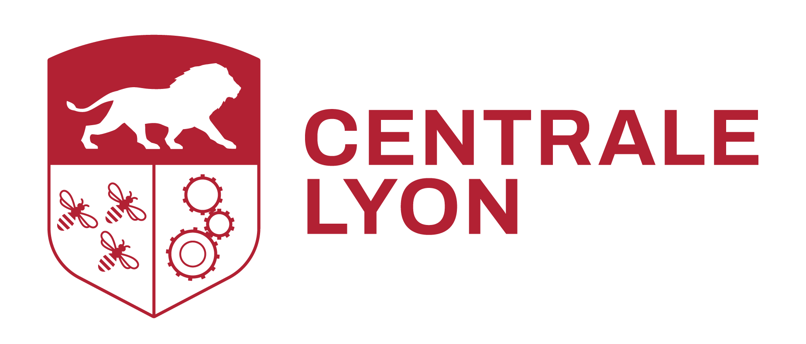

ML Model applying satellite data, climate data to analysis and sustainable environmental monitoring.
[Add a 2–3 sentence description: the problem it solves, what the students built, and the tools or technologies used.]
View project →
Selected work
Applied data science projects completed by students during their studies in the program, in partnership with host organizations.
[Add a 2–3 sentence description: the problem it solves, what the students built, and the tools or technologies used.]
View project →This project designs a machine learning pipeline to predict the math level of 15-year-old students from large-scale educational data. The team trained and tuned three gradient boosting models (XGBoost, LightGBM, CatBoost) with Optuna, then combined them through Ridge stacking for a more stable final prediction, achieving the 3rd best score among all submissions in the challenge.
View project →[Add a 2–3 sentence description: the problem it solves, what the students built, and the tools or technologies used.]
View project →